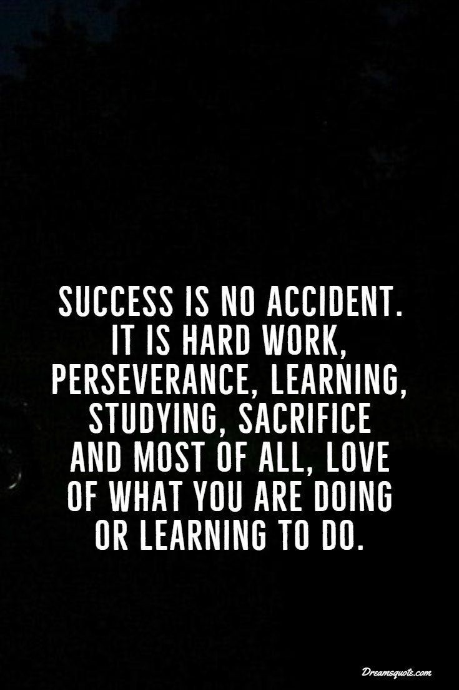
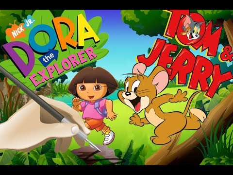

Thank you for making a pause its my first blog about myself. I’m not a good writer but will try my level best .Yeah let me intro me first I’m Nishalinibaskaran😊 I was born on sep 5th 2000.Yes I’m a 2K kid 😉 luckily and youngest of all obliviously dearest to all . Mom’s girls.👨👩👧👧
As years went on they pushed me into St.marys school I was kind of kid who does like to do homework and read seriously I’m average studying girl doesn’t feel for it but I love singing so joined in classical music class I went for 2 years and I have finished 5 exams in Hindi everything has stopped as I stepped into my 10th got good marks in my 10 and 12 . now pursuing in Sri Manakula vinayagar engineering college as i was the last kid they does what to send me out .
 My inspiration is my father who working in TNEB he joined in a lowermost grade at the same time he had a cab after his work he used to go as driver for his cabs he did all this to hold hands his love and to keep her like a Queen . Due to his hardwork he got greater height in personal life as well as professional life.
It was assigned by study monk its my pleasure working with studymonk i love doing it😀. Thank you for this wonderful opportunity.

Hey your looking soo gorgeous 😍yes im dame sure about it because looks only depends on eyes which sees it 🤗. This blog about my childhood cartoon I have my favourites according to stages of my childhood😅. During my primary I was fond of dora buji and tom and jerry Istill remember those golden days everyday day after my school I used to fight with my sis for dora buji but like ben 10 yes those days where amazing repeating what Dora says oh those sweet days. Tom and jerry tooo because me and my sis resembles the same😉. 
As days went on my interest got shifted to penguins of Madagascar 😍it was a combined package of tom and jerry and Dora think so that was the reason behind my change. At present I love shin Chan his humor I don’t have a specific favourite cartoon because I used to play outside with my friends I will come home only eating and sleeping😁 I got nick name to for rooming crow obliviously came to that colour as days went on. My childhood went on well I know cricket I used to ride cycle play shuttle etc…
Now a days everyone have came across this word STRESS yes even small kid tells I have lots of stress . Okay where it was when we kids❓❓
It was assigned by study monk its my pleasure working with studymonk i love doing it😀. Thank you for this wonderful opportunity.
THE RICH GETS RICH POOR GETS POOR!!!
Comedy is tragedy + time, right? We’re now over 7 years out from the apex of the American financial crisis, which spiraled outward across the world, and yet what has really changed? People are still making millions/billions off the suffering of others, corporate control reigns supreme, fraud is common and remains largely unknown, wealth continues to be ever more concentrated in the grasp of a few, and the remainder of the populace are treated as proverbial rats and made to feel uncouth should they question the system and question not wanting to live their lives playing this sadistic game. Taking 2 pennies and selling them to someone for a hundred dollars remains a legal activity, just call those pennies by a different name and suddenly it’s okay to pass them off as fair market.

It doesn’t sound funny at all, but The Big Short succeeds in turning this demented and corrupt circus into something improbably hilarious and probing. The power of comedy is its ability to let us see something from a different viewpoint, allow us to process it in ways we wouldn’t have been able to otherwise. As we might laugh at children for the hilariously unaware things they say and do, so too will humankind in the future hopefully laugh at how completely pathetic and ignorant our present society has been. Martin Scorsese opened the flap up into the circus entrance with “The Wolf of Wall Street” and, while making good points, was perhaps a bit too concerned with his own technique and had a bit too much indulgence, reveling in the frivolity of it all. The Big Short completely blows the top of the circus and dissects it in every way, starting with the widespread fraud and greed in business, and then examining how it has seeped into our entire existences. Even the good guys here are ultimately out there to make money, lots of it. Isn’t that what society tells us we must to do, in order to be valuable? It’s sick.
McKay’s approach here is “throw everything in, including the kitchen sink” and that creates an energetic, brilliantly matched representation of the subject matter. This does not mean he is lacking control, however. The story being told includes so many facets and characters that it easily could have fallen into disarray, but McKay makes every single character memorable and illuminates every piece of jargon that could be confusing from the outset. It’s a huge accomplishment and a far more important one than might seem apparent. The things that were allowed to happen in the realms of business, finance, and banking are absolutely INSANE and unbelievable. It has to be largely comedic because there’s no other way of delivering this vast amount of information and complete failure of our entire society and make it all snap into place so continuously, without being ripped apart by the overwhelming darkness of it all. This isn’t simply circumstantial and theoretical and mysterious to a degree, as in Oliver Stone’s “JFK”, but the cold hard truth.
It’s not enough to even ask for the truth anymore and ask for answers, we need to question the entire system, a whole web of poisonous bonds that have tightly wound themselves so entirely around us. The work of the film itself is allowing us to project our thoughts, our fears, our anger, and our confusions into this convoluted conundrum. All while being told the truth, so that we at least have a place to even start down the correct path of understanding. It’s acting as our own investigative journey in a time when actual news and journalism has become a tiny spec of its former self. We now have more information than ever available to us, yet it’s often so shrouded and twisted as to become unrecognizable. There are still those who fear education for what it would do to their own position in life, how it would challenge their own reality. We are still held under the thumb of “greed is good”, “thinking you’re inherently better is good”, “vanity is good”.
 The shiny mainstream hallmarks of a typical Hollywoood commercial product — the agreeable lighting and manicured actors and tidy locations — are so perfectly representative in this film of the emptiness within the characters and indeed in our entire society. After all the progress we think we’ve made towards world peace and human rights and medical advances and the stability of the human race, have we lost sight of what a fulfilling life and a world of justice should really be? Aren’t we still captive to the same pointless rituals and superficialities, doesn’t a veritable monarch and royal court still control most everything? We are now living our lives working for something that can be wiped out with the stroke of a keyboard. We are told something of monetary worth that is non-existent, for all intents and purposes, is something we should strive for. Making a bet on the outcome of another bet is a whole industry. The non-existent and ridiculous and pointless directly hurts the lives of many.
The Big Short is one of the most important films of this era and one of the best. I wanted to laugh and cry at the same time. It is an illumination, a magical pairing of a director’s sensibility to exactly the correct form that most fully allows it to blossom and hold water. It is water which the film warns us will be the next basic human necessity to be denied by those few who hold power.
It was assigned by study monk its my pleasure working with studymonk i love doing it😀. Thank you for this wonderful opportunity.
The shiny mainstream hallmarks of a typical Hollywoood commercial product — the agreeable lighting and manicured actors and tidy locations — are so perfectly representative in this film of the emptiness within the characters and indeed in our entire society. After all the progress we think we’ve made towards world peace and human rights and medical advances and the stability of the human race, have we lost sight of what a fulfilling life and a world of justice should really be? Aren’t we still captive to the same pointless rituals and superficialities, doesn’t a veritable monarch and royal court still control most everything? We are now living our lives working for something that can be wiped out with the stroke of a keyboard. We are told something of monetary worth that is non-existent, for all intents and purposes, is something we should strive for. Making a bet on the outcome of another bet is a whole industry. The non-existent and ridiculous and pointless directly hurts the lives of many.
The Big Short is one of the most important films of this era and one of the best. I wanted to laugh and cry at the same time. It is an illumination, a magical pairing of a director’s sensibility to exactly the correct form that most fully allows it to blossom and hold water. It is water which the film warns us will be the next basic human necessity to be denied by those few who hold power.
It was assigned by study monk its my pleasure working with studymonk i love doing it😀. Thank you for this wonderful opportunity.